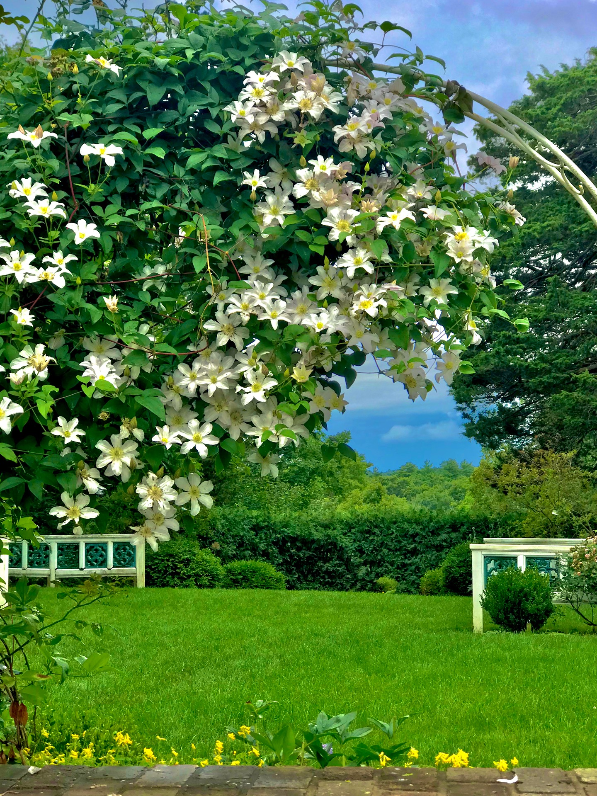
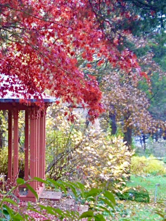

History
In 1916, this 114-acre hillside property attracted Atlantic Monthly editor and publisher Ellery Sedgwick and his wife for its lovely views of the rural North Shore. But Mabel Cabot Sedgwick, an accomplished gardener and horticulturist, had more ambitious – and aesthetic – ideas. As the couple formulated plans for the elegant Federal-style home that would become their summer retreat, Mabel Sedgwick also set about designing gardens and landscape amenities that are renowned a century later. After her death in 1937, her vision was sustained and expanded by the second Mrs. Sedgwick, the former Marjorie Russell, a rare plants specialist, who added new and rare species of trees and shrubs to the estate, some introduced by the Arnold Arboretum in Jamaica Plain. The gardens are laid out in a series of separate garden “rooms” surrounding the handsome, Federal-style, brick house. Each “room” is distinct in its own way, accented by ornaments and statuary. Today, the gardens retain the “Garden for Living”–style with integrated outdoor rooms, mature plantings that blend into the surrounding woodlands, and a spirit of innovation in horticulture. To design their indoor living space, the Sedgwicks hired the Boston firm of Richardson, Barrott and Richardson. The family wanted to bring the outdoors in, and they decorated the rooms with lovely murals of garden scenes and flowers. Its interiors also boast elegant woodwork and mantelpieces from the Isaac Ball House in Charleston, South Carolina. The gardens are flanked on all sides by more than 100 acres of woodland as well as an apple orchard, meadow, children’s garden, and agricultural fields, including a 2-acre organic vegetable farm run by The Food Project as a Community Supported Agriculture (CSA) project.
Spring

Summer
Autumn
Winter